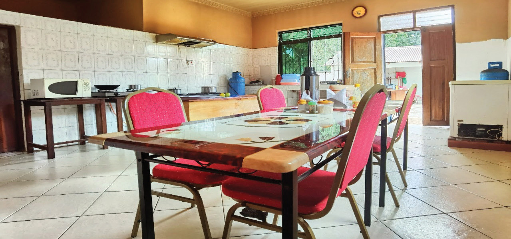

Open kitchen
In this type, the kitchen is openly seen from the dining or living room. There is no separate wall, partition or door. Open kitchens allow hosts or cooks to interact with guests while preparing meals. With an open kitchen, it is easy to prepare and replace meals and remove dirty utensils from the dining table. It is also easy to see unwashed dishes, scattered utensils and food scraps. Therefore, this type of kitchen requires constant cleaning to maintain kitchen hygiene. There are two types of open kitchen, as described below:
Kitchen open to the dining room: In this type, the kitchen opens to the dining. There is neither a separate wall nor a door, and someone can see everything in the kitchen from the dining room, as shown in Figure 3.1. Usually, there is no privacy during meal preparation because people who are seated in the dining room can see food preparation and cooking in the kitchen.

Kitchen open to the living room: In this type, the kitchen is combined with the living room. It can be seen clearly from the living room. This type of kitchen gives convenience for other activities such as watching television or spending time with other family members or guests while preparing meals. In some houses, this type of kitchen provides an area where food is served as shown in Figure 3.2.